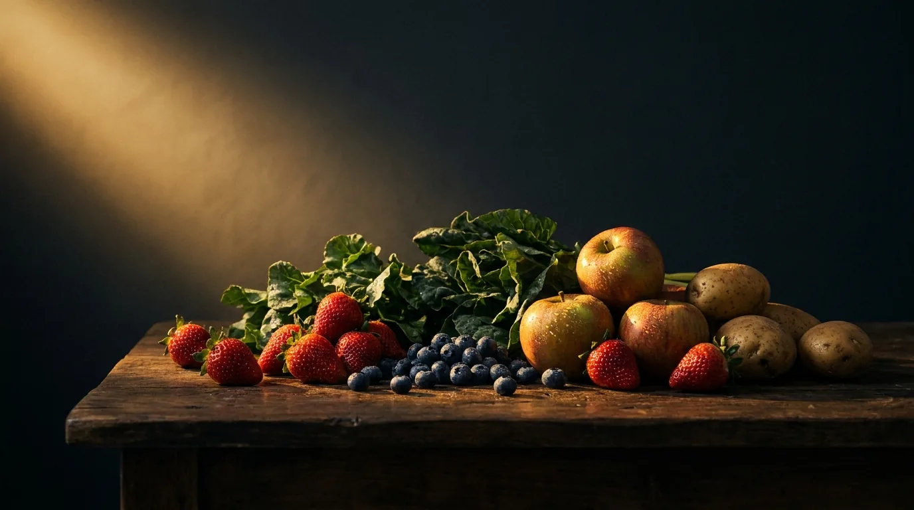

Bio-Einkaufsguide · Teil 01 · Vertiefung zum Reel
Wo sich Bio wirklich lohnt.
Die Liste ist nach Pestizidbelastung geordnet. Oben stehen die Lebensmittel, bei denen sich Bio wirklich auszahlt, weil dort die meisten Rückstände sitzen. Unten die, bei denen du entspannt zur günstigeren konventionellen Variante greifen kannst.
Von Dr. Lara Vadlau · Longevity Medicine
